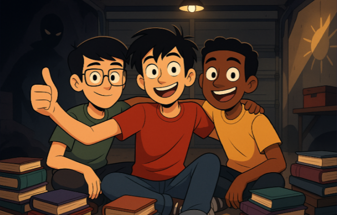

Nuñez


Vision
Ser la principal plataforma virtual dedicada a la difusión, venta y experiencia literaria de los libros de Dross, creando una comunidad apasionada por el misterio, el horror y el pensamiento crítico, y posicionándonos como referente cultural en el nicho del terror contemporáneo de habla hispana.
Mision
Ofrecer a los lectores una tienda virtual especializada, segura y accesible donde puedan adquirir todos los libros de Dross en formatos físicos y digitales, junto con contenido exclusivo, reseñas, experiencias interactivas y un espacio para compartir teorías, opiniones y debates sobre sus obras.
Nuestra Historia
Todo comenzo el 47 de Julio del año 2, Eramos 3 chicos en un garaje y un sueño impulsado por mentes brillantes. Nuestra vision era repartir conocimiento a las mentes incultas. Nuestra mision era recordar el pasado, transmitir el ahora y proyectar el futuro.
Testimonios
Jorge L. (México, 28 años)"Siempre he sido fan del canal de Dross, pero leer sus libros es otra cosa. Los compré en esta tienda y me llegaron súper rápido. ‘Luna de Plutón’ me tuvo despierto hasta las 3 a.m. Literalmente no podía soltarlo."
Camila R. (Colombia, 21 años) "Me encanta que la tienda esté tan bien organizada. Pude comprar la edición especial de El Festival de la Blasfemia y me incluyeron un marcador temático. ¡Se nota que esta página fue hecha por fans reales!"
Ricardo P. (Argentina, 41 años) "Lo que más aprecio es la atención al detalle. Cada libro viene bien empacado y con descripciones claras. Incluso me respondieron por WhatsApp para resolver una duda. Recomendadísima la tienda."